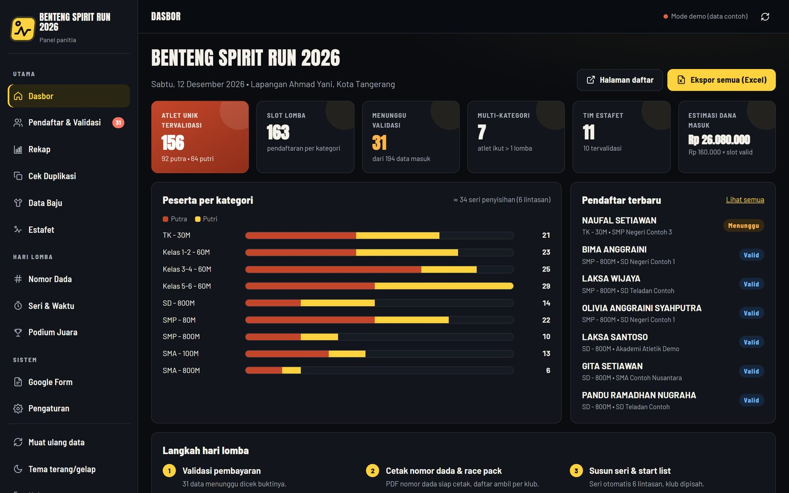
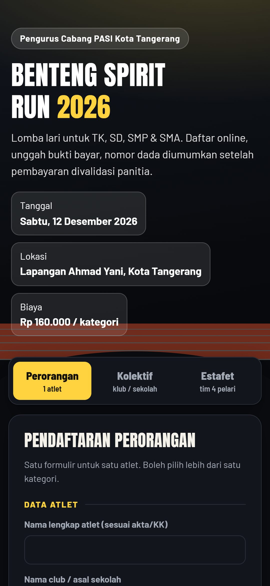
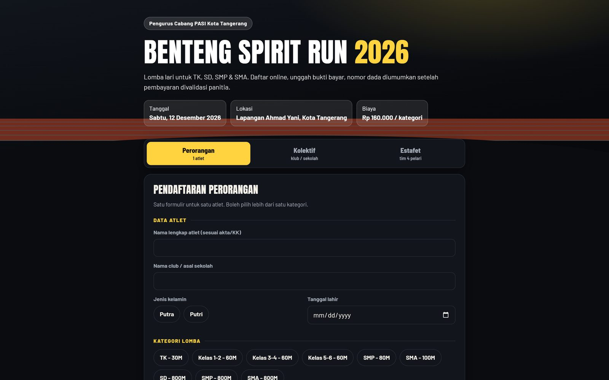
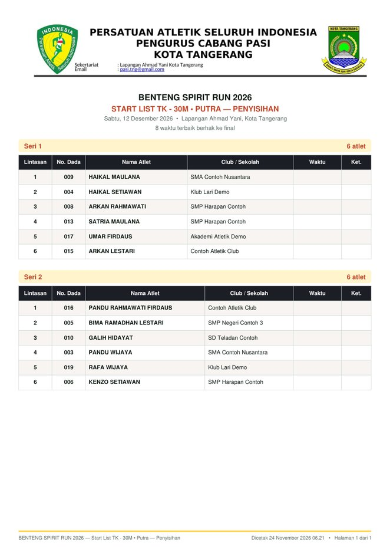
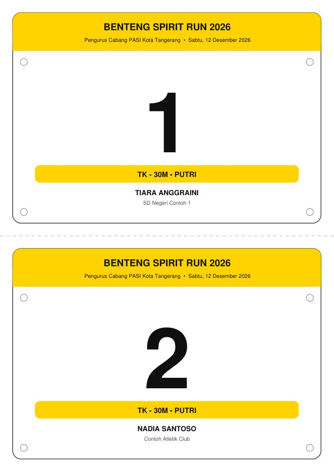
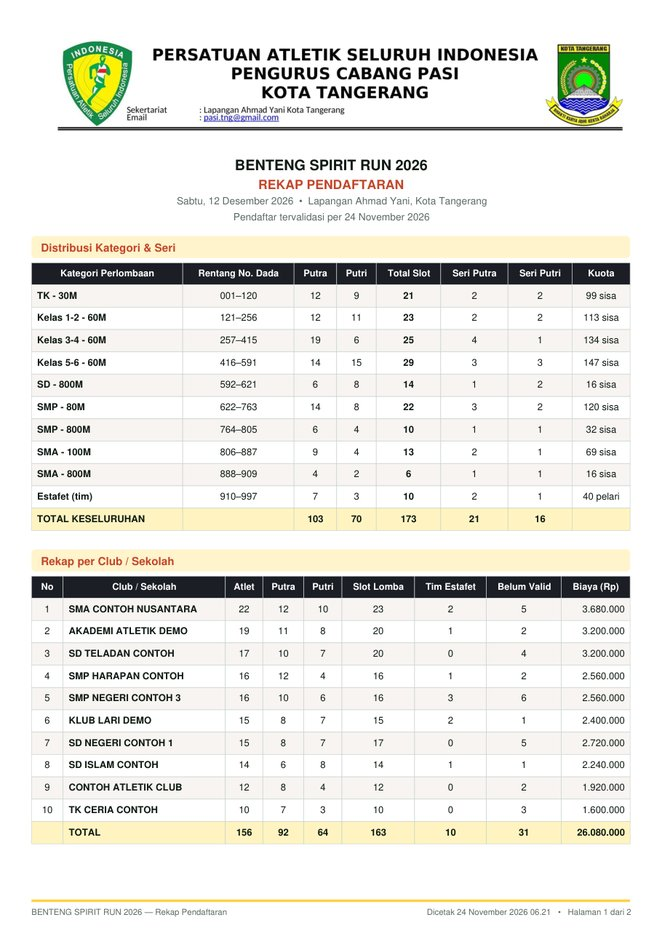
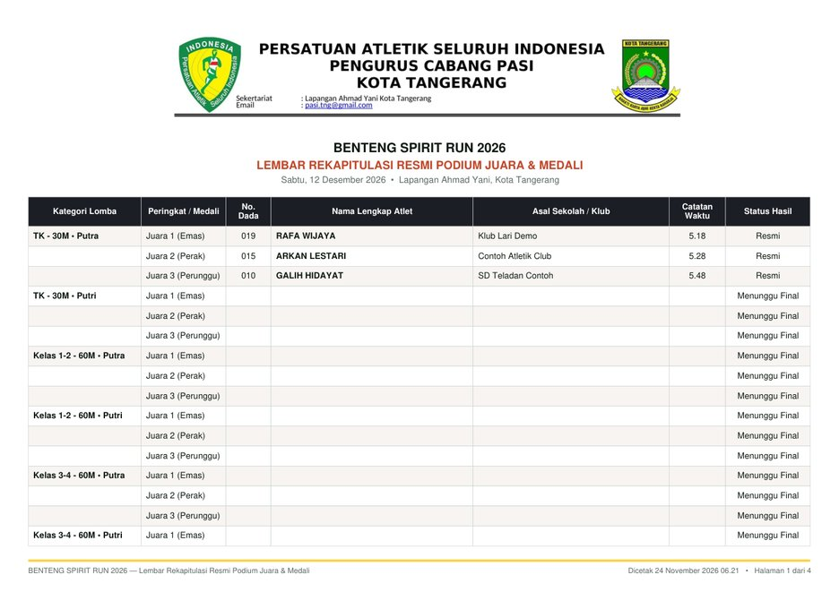

Validasi pembayaran
Lihat bukti transfer, centang valid satu per satu atau puluhan sekaligus. Tersimpan langsung ke spreadsheet.
Sistem perlombaan atletik yang tersambung langsung ke Google Spreadsheet dan Google Form panitia. Validasi bayar, nomor dada, seri, catatan waktu, final, dan podium — semua rapi, semua bisa diekspor.


Puluhan tab, rumus panjang, dan rekap manual menjelang hari lomba. Sistem ini membawa semuanya ke satu layar yang mudah dipakai panitia mana pun.
Dirancang dari spreadsheet panitia Benteng Spirit Run, jadi alurnya sudah sesuai kebiasaan di lapangan.
Lihat bukti transfer, centang valid satu per satu atau puluhan sekaligus. Tersimpan langsung ke spreadsheet.
Tiga digit (001) sesuai rentang & warna kategori. Atlet multi-kategori tetap satu nomor. Cetak PDF siap potong A5.
Seri 6 lintasan dibuat otomatis, teman satu klub dipisah. Ketik waktu dari lapangan, peringkat langsung muncul.
Final dari 8 waktu terbaik dengan urutan lintasan tengah. Podium dan klasemen medali klub terisi sendiri.
Deteksi pendaftaran ganda, atlet multi-kategori, dan NIK yang dipakai nama berbeda — hapus barisnya dari web.
Rekap ukuran kids & dewasa, kloter 1 sudah cetak dan kloter 2 yang akan dicetak, pembagian per klub.
Kelola tim 4 pelari + cadangan per kategori SD/SMP/SMA, nomor dada pelari terisi otomatis.
Buat form pendaftaran perorangan atau estafet dari web; jawabannya langsung masuk ke spreadsheet yang sama.
Halaman daftar perorangan, kolektif per klub/sekolah, dan tim estafet. Bukti bayar difoto langsung, tersimpan rapi di Google Drive panitia.

Setiap menu punya tombol ekspor. PDF ukuran A4 dengan kop PASI, nomor halaman, dan kolom tanda tangan; Excel dengan judul, filter, dan kolom yang rapi.




Tidak ada server tambahan. Google Form, halaman daftar, dan panel panitia membaca serta menulis ke Google Spreadsheet milik panitia sendiri.
Atlet & official mengisi data dan bukti bayar.
Satu sumber data. Rumus dan tab lama panitia tetap utuh.
Validasi, seri, waktu, podium, ekspor.
Bisa. Form yang tertaut ke spreadsheet langsung terbaca. Form baru juga bisa dibuat dari menu Google Form di panel; jawabannya masuk ke tab baru di spreadsheet yang sama.
Tidak. Tab dan rumus lama tetap utuh. Sistem hanya menulis centang validasi dan pendaftar baru di tab jawaban, serta menambah tab APP_ untuk pengaturan, seri, dan estafet.
Berdasarkan urutan pendaftar yang sudah divalidasi dan rentang nomor tiap kategori (misalnya TK 001–120). Atlet yang ikut dua kategori tetap memakai nomor yang sama.
Bisa. Buat salinan spreadsheet, jalankan setup sekali, lalu ubah nama acara, tanggal, biaya, kategori, dan rentang nomor dada di menu Pengaturan.
Tidak. Cukup buka di browser laptop atau HP. Panitia masuk dengan PIN, atlet mendaftar lewat tautan.
Masuk ke panel panitia, atau coba dulu mode demo dengan data contoh.